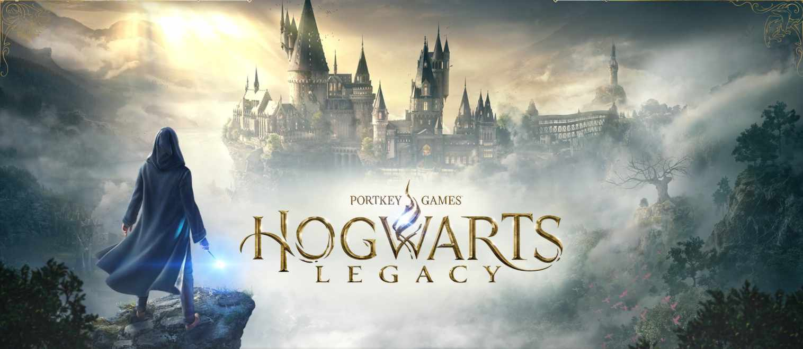
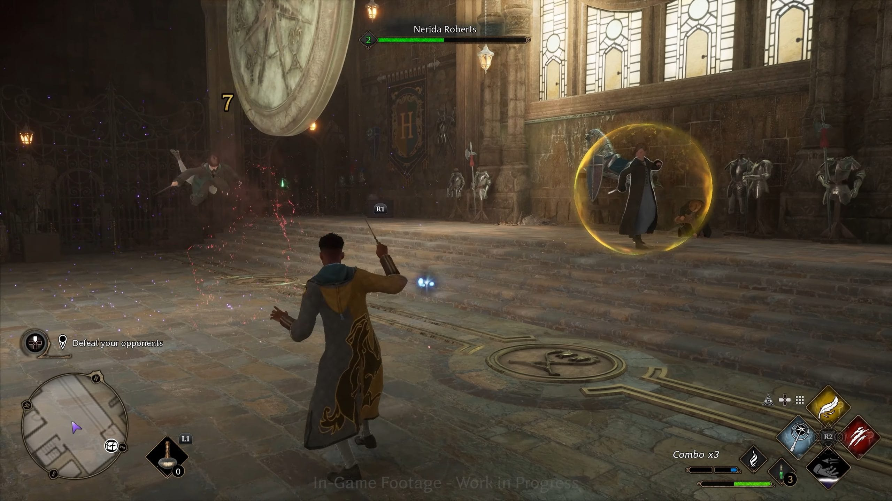
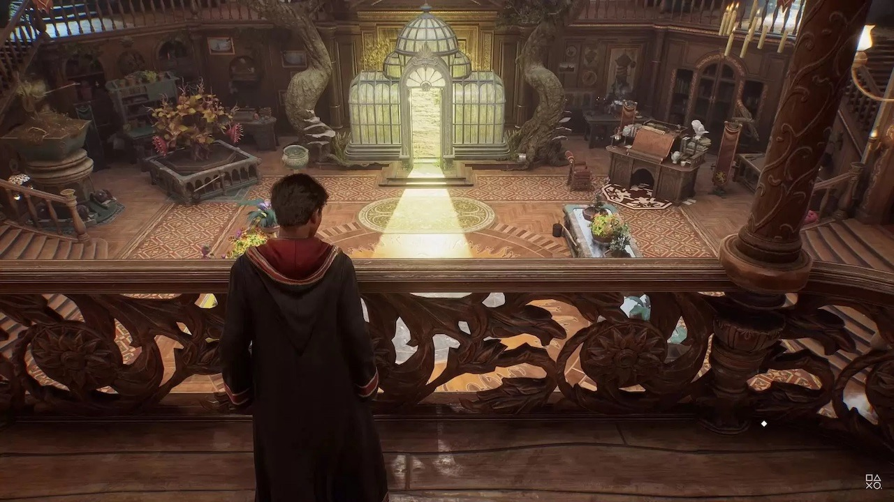

Action RPG / Open World / Avventura


Per gli amanti del Wizarding World, Hogwarts Legacy si dimostra un action RPG open-world straordinariamente immersivo, capace di calamitare l'attenzione grazie alla cura maniacale riposta nei dettagli dell'universo di Harry Potter. Nei panni di uno studente iscritto direttamente al quinto anno, sarai libero di esplorare il castello e i territori circostanti per svelare i misteri legati a una magia antica e sventare una ribellione goblin.
L'unica nota stonata riguarda la varietà delle attività nel mondo di gioco che, una volta superata la meraviglia iniziale per le mura di Hogwarts, tende a farsi ripetitiva nelle campagne esterne. Quando la mappa inizia a riempirsi di compiti fotocopia come le Prove di Merlino, l'entusiasmo per la scoperta rischia di calare. Anche se il sistema di combattimento a colpi di incantesimi è divertente, i pattern d'attacco di goblin e maghi oscuri si somigliano un po' tutti, rendendo i duelli prevedibili alla lunga.
Il fiore all'occhiello dell'esperienza gestionale è la Stanza delle Necessità. Questa location funge da quartier generale per il giocatore, che può personalizzarne l'estetica e disporre banchi alchemici e tavoli botanici. La parte migliore è l'accesso ai Vivai, dove accudire e nutrire le creature magiche salvate durante l'esplorazione: gli animali ricambieranno le attenzioni donando materiali rari, fondamentali per potenziare le statistiche degli equipaggiamenti.
